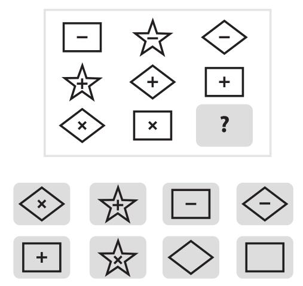

2008年，美国桑福德市的桑迪•希尔曼（Sandy Sillman）被诊断患有多发性硬化症。这种病没有生命威胁，但会使人虚弱，容易疲劳。他的背部和臀部有痛感，走路困难，甚至打字也成问题。到了2011年，他回忆道，“我能感觉危机迫近”。不久他不得不放弃大气科学家这份工作。
那一年，桑迪57岁。他知道丢掉工作会让生活出现空白，所以需要找一些事情来做，让自己在可控的范围内忙起来。于是，当听说一项预测比赛正在招募志愿人员时，他报了名，开始为精准预测项目做预测。“人一旦停止工作，就会有点失落，感觉自己没价值。”他在一封电子邮件里告诉我，这封邮件是通过语音转文本软件自动生成的。“我认为精准预测项目不错，对我而言，它是一个‘过渡项目’，压力和重要性不像工作时那么大，但仍然值得重视，也能让我的思维保持活跃。”
桑迪的大脑非常了不起。他的学历如下：布朗大学文学学士，辅修数学和物理两个专业；麻省理工学院技术和政策研究理学硕士，以及哈佛大学应用数学硕士；哈佛大学应用物理博士。拿到博士学位之后，他成为密歇根大学的大气研究科学家。桑迪在那里发表了研究报告，标题颇有气势：“附加的非甲烷易挥发有机化合物、有机硝酸盐以及含氧有机物的直接辐射对全球对流层化学的影响”。这份报告为他带来了奖项和荣誉。桑迪的才识不只是表现在数学和科学领域。他是渴求知识的读者，阅读面不限于英文文献。得益于在瑞士做访问学者时的训练，他的法语也很熟练。他的语言技能中还包含俄语，因为妻子是俄国人。他能说能读意大利语，因为“在我12岁时，我真的认定自己想要学习意大利语，然后就开始自学”。桑迪还说西班牙语，但他认为西班牙语与意大利语如此相似，不应算作另一门语言。
不幸的是，桑迪对自身健康状况的一番预测一语成谶。2012年，他因残疾休假，尽管如此，他在给密歇根大学同事的便条上，还是以一贯的温和谦卑的语气写道：“我更喜欢把这次休假当作提前退休。”
更令人愉快的是，桑迪还有相当数量的预测同样准确。在第一年的比赛中，经过随机分配，他得到的对照条件是：必须独立完成预测。最后他的布莱尔得分是0.19，这个分数相当于总冠军的成绩。他击败了几乎2800名竞争者，其中大多数人的对照条件更有利于激发潜能。桑迪激动极了。“这当然非常令人激动。我感觉很棒，全身有点‘火辣辣’。这么说显得有点业余。唯一可与之相比的是，我上高中时，在一次在数学竞赛中拿到了第一名。我想我内心深处还停留在高中阶段。”1 当我们整理首批超级预测家名单时，桑迪的名字赫然排在首位。
我们不禁猜测桑迪引人注目的成绩来源于他那令人惊叹的大脑。对于其他超级预测家，我们持同样的看法。
研究进行到第二年，我们在沃顿商学院亨茨曼大厦顶层的会议室宴请一批超级预测家，仅从闲聊中就能明显看出这些人非常敏锐，密切关注新闻，特别是精英媒体的新闻。他们也喜爱读书。我问约书亚•弗兰克尔（Joshua Frankel）闲暇时看什么书，这位来自布鲁克林的青年制片人一口气说出一连串品位不俗的作者，例如托马斯•品钦。思考片刻后，他补充道，最近读了德国火箭科学家冯•布劳恩的传记和各种纽约历史书。弗兰克尔谨慎地告诉我们，关于纽约的书与他的工作有关，他正在制作一部歌剧，讲述纽约伟大的城市规划师罗伯特•摩斯（Robert Moses）与随性的反规划人士简•雅各布斯（Jane Jacobs）之间带有传奇色彩的冲突。弗兰克尔可不是那种在《危险边缘》节目上与人争吵不休的人。
超级预测家更加出色，完全是因为他们更加博学、更加聪明吗？这种说法对他们来说是奉承，但对我们而言却是自我贬低。知识这种东西我们都可以增加，只是速度缓慢。思维懒惰的人很难有希望追上终生学习的人。智力看起来更是令人气馁的障碍。有些人相信增强认知能力的药丸和电脑游戏可以提高智力，也许某天他们会得到证明。但是，大多数人认为，成年人的智力比较稳定，这是你还在母亲肚子里时天赐的DNA决定的，也是出生时家庭的和睦与富有程度决定的。如果做超级预测是门萨俱乐部的天才们（1%最聪明的人，智商标准差是普通人的3倍）的工作，那么我们绝大多数人根本无法胜任。所以，何必想方设法去尝试呢？
知识和智力产生远见卓识，这个观点听起来合理，可是，阿奇•柯克伦清楚地阐明了，表面合理还不足以说明真正合理。我们必须检验这个猜想。由于精准预测项目联合负责人芭芭拉•梅勒斯的帮助，并得益于那些在预测前经受过一组令人极度疲劳的心理测试的志愿者的支持，我们可以搜集数据来检验前述猜想。2
要评估自己的流体智力 [1] 和尚待开发的计算能力，志愿者必须解出图5–1所示的智力题。这道题要求填充右下角的空白。解题思路是，确定每一行（图形中间必须有唯一符号）和每一列（必须包含所有三种图形）模式的产生规则。正确答案是下面第二行的第二个图形。3

不过，如果你不知道在现实世界中如何发现模式，那么即使拥有强大的模式识别能力，你也不会表现优异。所以，我们通过一些与美国相关的问题来评估晶体智力 [2] —知识，这些问题包括“最高法院有几位大法官”，还有全球性问题，例如“联合国安理会有哪些常任理事国”。
在得出答案之前，注意，精准预测项目第一年有数千名志愿者报名参加，其中2800人经过足够的准备后通过了所有测试，开始进行预测，这个人数与随机选择的样本数相比还远远不够。这一点很重要。随机选择确保了样本能够代表它所在的人群。如果没有随机选择，我们就不能认为志愿者充分代表美国或任何地区的居民。毕竟，我们的2800名志愿者只是从博客或某篇文章看到预测比赛的消息，然后对自己说：“是的，我要从宝贵的闲暇时光中抽出大把时间来分析尼日利亚政治、希腊债务、中国军事开支、俄罗斯石油和天然气产量以及其他复杂的地缘政治问题。我想用一年中大部分时间来做这样的事。除了价值250美元的礼券，没有任何物质收益，但我愿意。”我们可以非常自信地说，这些人并非平庸之辈。因此，为了理解智力和知识对超级预测家的成就有何作用，我们必须再进一步。我们不仅应该将超级预测家的智力和知识与其他预测者进行比较，而且应该与美国的普罗大众进行比较。
我们有什么发现？普通预测者在智力和知识上的测试得分比大约70%的普通民众高。超级预测家优势更明显，得分高于约80%的普通人。
注意三件事。其一，智力和知识的大跃进出现在普通民众与预测者之间，而非一般预测者和超级预测家之间。其二，虽然超级预测家的表现强于一般预测者，可也没有达到破纪录的高度。而且他们中的大多数算不上所谓的天才，尽管天才这个概念并不明确，经常被武断地界定为人类中最顶层的1%，或者智商在135以上的人。
这么说来，智力和知识似乎确有帮助，但进入某个范围之后，作用就很小了。因此，超级预测不需要哈佛大学的博士学位和说5国语言的能力。这个结论令我满意，因为它符合丹尼尔•卡尼曼在多年前我刚开始这项研究时和我分享的直观认识：各专业领域的重要专家在做预测时，只会略强于《纽约时报》的热心读者。这个结论也会让读者满意。如果你一直在做预测，很可能你已经具备了成为超级预测家所需的要素。
话说回来，拥有必要的智力和知识还不够。在比赛中，许多既聪明又博学的预测者远远达不到超级预测家的准确性。历史上总是有些聪明人，做出的预测事后证明根本谈不上先见之明。在肯尼迪和约翰逊两任总统任职期间担任国防部长的罗伯特•麦克纳马拉以“史上最优秀、最聪明的人”之一著称。他和同僚坚信，如果越南全境落入共产党之手，整个东南亚都将倒向共产主义阵营，美国的安全将受到威胁。于是在他们的主导下，越南战争逐步升级。他们的固执并非建立在严谨的分析基础上。事实上，直到1967年，美军才对这个至关重要的预测进行认真分析，而在几年前麦克纳马拉就已经决定升级战争。4
“我们制定决策的基础存在严重缺陷，”麦克纳马拉在自传里写道，“我们未能慎重地分析我们的预测，当时和之后都没有做这个工作。”5
归根结底，真正重要的不是思考能力本身，而是使用它的方式。
注释
[1] 流体智力是一种以生理为基础的认知能力，比如知觉、记忆、运算速度、推理能力等。—编者注
[2] 晶体智力主要指学会的技能、语言文字能力、判断力、联想力等。—编者注